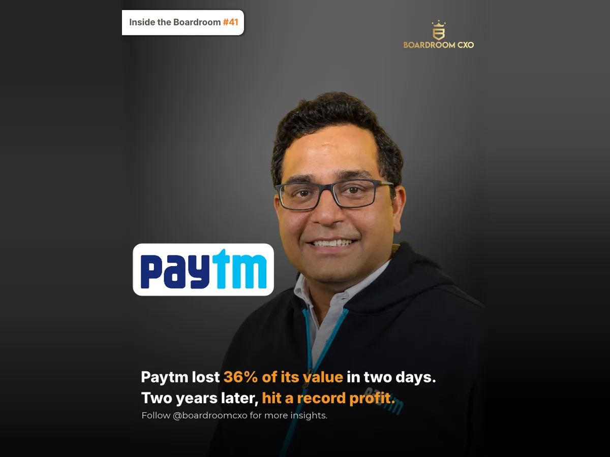

Key Takeaways
- On 31 January 2024, the RBI barred Paytm Payments Bank from taking deposits or top-ups after 29 February, and Paytm's shares fell 20% on each of the next two trading days to ₹487.20.
- On 14 March 2024, one day before the bank's 15 March deadline, NPCI approved Paytm to run UPI through Axis Bank, HDFC Bank, State Bank of India and YES Bank.
- Paytm reported its first full-year profit of ₹552 crore in FY26 and a net profit of ₹225 crore in the July to September 2026 quarter, with 8.5 crore monthly transacting users.
"At a professional level, I would say we should have done better, there is no secret about it."
Vijay Shekhar Sharma, founder and CEO of Paytm, said that in July 2024. Five months earlier, the Reserve Bank of India had shut down most of Paytm Payments Bank, and Paytm's shares had lost more than a third of their value in two trading days.
Few founders say it that plainly. Fewer then spend the next two years proving they meant it.
What the RBI Did to Paytm Payments Bank in January 2024
On 31 January 2024, the RBI barred Paytm Payments Bank from taking any deposits, credit transactions or top-ups in its customer accounts after 29 February. It cited persistent non-compliance and continued material supervisory concerns. The bank was also stopped from offering other banking services, such as UPI and fund transfers, after a final cut-off of 15 March 2024.
The payments bank was a separate company from One 97 Communications, the listed company that runs the Paytm app. But much of the app ran through it: wallets, FASTags and the @paytm UPI handles that crores of people and shopkeepers used every day. Paytm said existing balances in savings accounts, wallets, FASTags and transit cards could still be used. The question every user had was simpler. Will my app still work next month?
Investors did not wait for the answer. On 1 February, Paytm's shares fell 20% to the lower circuit at ₹608.80 on the BSE. On 2 February, they fell another 20% and opened at a 52-week low of ₹487.20. The exchanges then cut the stock's circuit limit to 10%, and on Monday, 5 February, it opened at ₹438.35, locked at the lower limit again.
Who Is Vijay Shekhar Sharma?
Vijay Shekhar Sharma is the founder and CEO of One 97 Communications, the company behind Paytm. He built Paytm into one of India's best-known payment brands, with its QR codes and Soundbox devices on shop counters across the country.
He has been through hard years before. Speaking in July 2024, he said the RBI action was not the biggest setback Paytm had faced in its journey. But it was the most public one, and it hit the part of the business that customers trusted most: their money.
How Sharma Responded: Stop Arguing, Start Fixing
In a regulatory crisis, the natural reflex is to defend the company in public, question the regulator and promise that nothing is wrong. Sharma did not take that route.
In his first address to employees after the order, an hour-long virtual town hall with around 800 to 900 staff, he admitted what he did not yet know:
"We are not completely sure of things... like what exactly went wrong. But we will figure out everything soon. We will reach out to the RBI to see what can be done."
Then the work moved to a single goal: keep payments running when the bank stopped.
Keeping UPI alive. On 14 March 2024, one day before the 15 March deadline, the National Payments Corporation of India approved One 97 Communications to run UPI as a third-party app provider under the multi-bank model. Four banks came on board as its partner banks: Axis Bank, HDFC Bank, State Bank of India and YES Bank. YES Bank also became the acquiring bank for Paytm's UPI merchants, and the @paytm handle was redirected to it. Existing users and merchants could keep making UPI payments and AutoPay mandates without a break.
Cutting costs. In the April to June 2024 quarter, employee costs fell 9% from the previous quarter, part of a stated goal to save ₹400 to 500 crore a year.
Selling what was not core. In August 2024, Paytm agreed to sell its movie and events ticketing business, including the TicketNew and Insider platforms, to Zomato for ₹2,048 crore. About 280 employees moved with it. Paytm said it would now focus on its core payments and financial services distribution business.
And in July 2024, he said the part most founders leave out:
"We should have understood the situation better. We had responsibilities which we should have fulfilled in a better way. I think we have learnt our lesson from the issue and are making a better comeback."
What the Paytm Cleanup Cost
The damage was real, and it showed in the numbers.
- Losses rose. In the January to March 2024 quarter, Paytm's net loss tripled to ₹550.5 crore, from ₹167.5 crore a year earlier.
- The share price stayed low. On 5 July 2024, the stock closed at ₹436.60, more than 40% below its price before the RBI's action.
- Revenue and users shrank. In the April to June 2024 quarter, Paytm's operating revenue was ₹1,502 crore, and the company said the full financial impact of the disruption was now visible. Monthly transacting users had settled at 7.8 crore by the end of June, and Paytm was still waiting for permission to sign up new UPI users.
How Paytm Came Back to Profit
The part of the business that held up best was the shopkeeper. Even in that weak quarter, Paytm's base of merchants paying for its devices rose to 1.09 crore, and new merchant sign-ups were back to January 2024 levels.
From there, the recovery built up quarter by quarter.
- FY26: first full year of profit. Paytm reported a profit after tax of ₹552 crore on operating revenue of ₹8,437 crore, up 22%. Subscription merchants reached 1.51 crore, and the company said it gained consumer UPI market share every month of the year.
- July to September 2026. Net profit was ₹225 crore, against ₹21 crore in the same quarter a year earlier. Revenue rose 28.4% to ₹2,648 crore.
- Users coming back. Monthly transacting users rose by 1 crore in a year to 8.5 crore, the biggest yearly addition in nearly three years. Paytm said it had gained consumer UPI market share for the sixth quarter in a row.
The bank licence did not come back. The business did.
The Boardroom Lesson: Own the Problem Before You Defend It
When a regulator acts against a company, the first instinct of many boards is to protect the founder and fight the story. Paytm's recovery points the other way. The founder admitted he did not have all the answers, kept the regulator on side, and put every hour into keeping customers and merchants working.
A licence can be taken away overnight. Trust has to be earned back one shopkeeper at a time.
The UPI switch, the cost cuts and the ticketing sale were all practical steps. The admission that "we should have done better" was what made them believable.
Common Mistakes Boards Make When the Regulator Steps In
Regulatory action is a test of the board as much as of management. Three mistakes come up again and again.
They fight the regulator in public. A public battle makes headlines, but the regulator decides when the restrictions end. Paytm's route was to work with the RBI and NPCI and solve the customer problem first.
They treat compliance as a back-office job. The RBI cited persistent non-compliance and supervisory concerns. Those are board-level risks. When compliance reports sit two levels below the board, the board learns about problems from the regulator.
They protect every business line. In a crisis, cash and attention are limited. Selling the ticketing business for ₹2,048 crore let Paytm focus on payments and financial services, the part of the business under threat.
A Framework for Hiring Leaders Into a Regulated Business
When we brief boards on a leadership search for a fintech, bank or other regulated business, we push for three specific checks.
- Ask how they have handled a regulator. Look for a real example of a compliance finding, what the candidate did in the first week, and how the relationship with the regulator changed after.
- Test for honesty under pressure. "We are not completely sure what went wrong" is a hard sentence to say to 900 worried staff. Leaders who can say it early usually fix problems faster than those who deny them.
- Check their plan B for critical partners. Paytm needed four banks and an NPCI approval to keep UPI running. Ask candidates which single partner or licence their business depends on, and what happens if it goes.
Why This Belongs in the Boardroom, Not Just the Business Pages
Paytm's story sits next to the one we told about Ashok Vaswani at Kotak Mahindra Bank, where the RBI stopped new digital customers on his 115th day as CEO. In both cases, the leaders who came through it were the ones who fixed what the regulator found instead of arguing about it.
The regulator can take away a licence in one night. Only the company can earn back the trust.
Sources
- Inc42, Amid Payment Bank Troubles, Paytm Further Plunges 20% To Hit 52-Week Low, February 2024
- Inc42, Paytm Town Hall: Founder Vijay Shekhar Sharma Ensures No Job Cuts, Engaging With RBI Amid Crisis, February 2024
- Business Today, Paytm gets NPCI nod for TPAP, Axis Bank, HDFC Bank, SBI and YES Bank come on board, March 2024
- Inc42, RBI's Clampdown On PPBL Not The Biggest Setback Faced By Paytm: Vijay Shekhar Sharma, July 2024
- Paytm (investor relations), Paytm Q1 FY 2025 reports operating revenue of Rs 1,502 Cr; Merchant Payment Metrics Rebound, Consumer Metrics Stable, July 2024
- Business Standard, Paytm to sell entertainment ticketing business to Zomato for Rs 2,048 crore, August 2024
- Paytm (investor relations), Paytm FY 2026 Results: Full-Year Profitability with PAT at ₹552 Cr; Revenue Grows to ₹8,437 Cr, May 2026
- YourStory, Paytm sees 10x rise in net profit in Q2 of FY27, October 2026
Related Reading
Ashok Vaswani: The RBI Banned Kotak on His 115th Day. He Had It Lifted.
Read → R · 02 Founder Leadership · July 2026Suresh Narayanan: The MD Who Walked Into the Maggi Ban
Read → R · 03 Founder Leadership · October 2026Albinder Dhindsa: Zomato Bought His Struggling Startup. Now He Runs Zomato's Parent.
Read →Hiring a leader for a business that lives or dies by its licence?
We screen for leaders who have faced a regulator, owned the finding and fixed it, not just those who can grow a business when the rules are kind. Brief us on your next CXO mandate and we will tell you what the market actually has to offer.
Brief Us on a Mandate See all Finance roles we fill →